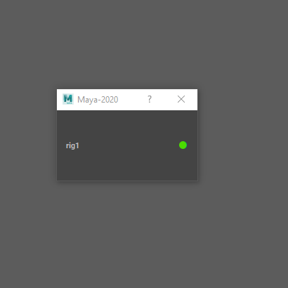

HStatus¶
-
class
source.Qt.custom_widget.HStatus(*args: Any, **kwargs: Any)¶ Allow to display a name and a status that can be change by pressing the status icon button
Example:
# Module specific imports import Qt.custom_widget as cstm_widget # PySide specific imports from PySide2 import QtCore from PySide2 import QtWidgets from PySide2 import QtGui win = QtWidgets.QDialog() layout = QtWidgets.QVBoxLayout(win) reference = 'rig1RN' item_name = 'rig1' status = 'green' widget = cstm_widget.HStatus( object_name=reference, item_name=item_name, status=status ) # if you want to change the status name in the pop up menu widget.green_action.setText('load') widget.orange_action.setText('cache') widget.red_action.setText('unload') layout.addWidget(my_label) win.show()
- Parameters
object_name (str) – name of the widget
item_name (str) – name of the item that will be displayed
item_status (str) – current status of the item
Functions
HStatus.change_status(status_dict)Change the status icon of the item
Create all layout of QWidget
Populate status popup menu
Create all widget of QWidget
Make context menu appear on cursor pos